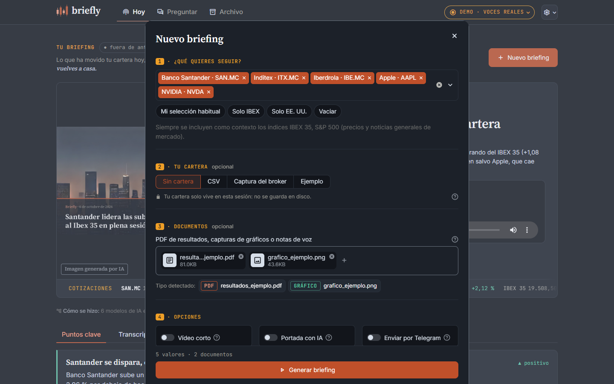
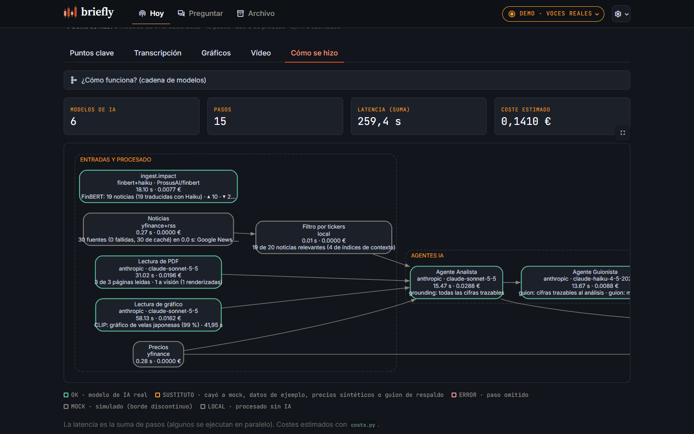

El cierre del día, mientras vuelves a casa
Un podcast diario a dos voces sintéticas sobre tu cartera.
Óscar Romero Quincoces · Daniel García López · Fernando Dapena Tauste
Briefly · 1 / 7
El cierre del día, mientras vuelves a casa
Un podcast diario a dos voces sintéticas sobre tu cartera.
Óscar Romero Quincoces · Daniel García López · Fernando Dapena Tauste

Entran
Salen
Las fuentes ya llegan como texto, PDF, imagen y voz: cada formato lo procesa un modelo distinto, encadenado al siguiente, en vez de un único chat de texto.




Contenido informativo generado con IA. No constituye asesoramiento de inversión ni recomendación de compra o venta. Puede contener errores. Las voces son sintéticas.